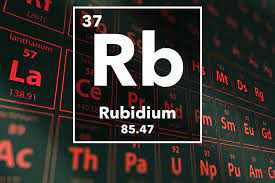

RUBIDIUM

*discovered by:*discovered by: Robert Wilhelm Bunsen and Gustav Robert Kirchhoff in 1861*
Physical properties
1)From alkali metals
2)Atomic mass: 85.4678 u
3)Atomic radius: 343pm
4)Valency: Monovalent
5)Density: 1532 kg m-3 at 20°C (sinks in water)
6)Melting point: 39.3°C (low)
7)Boiling point: 688°C
8)Soft Metallic element
9)Silvery/ White metal
10)Its flame is yellowish-violet.
11)Occurs in the minerals pollucite, carnallite, leucite and lepidolite.
12)Solid at room temperature
13)Malleable& ductile metal
Chemical properties
1)Atomic no.: 37
2)Electronegativity (according to Pauling): 0.8
3)Isotopes: 11
4)Monoatomic element
5)Kept in dry mineral oil or in an atmosphere of hydrogen (because it ignites spontaneously in air, and it reacts violently with water to yield a solution of rubidium hydroxide (RbOH) and hydrogen, which bursts into flames ;)
6)It reacts violently and immediately, with everything leaving the container forming Rubidium hydroxide solution.
7)It ignites spontaneously in air
8)Reacts violently with water and even with ice at-100°C
9)forms amalgams with mercury
10)It alloys with gold, cesium, sodium, and potassium
11)Moderately toxic by ingestion
12)Mildly radioactive
13)Highly inflammable
14)Soluble in water
15)One of the most electropositive and alkaline elements.
Uses of Rubidium
Rubidium and its salts have few commercial uses. The metal is used in the manufacture of photocells and in the removal of residual gases from vacuum tubes. Rubidium salts are used in glasses and ceramics and in fireworks to give them a purple color. Potential uses are in ion engines for space vehicles, as working fluid in vapor turbines, and as getter in vacuum tubes. Rubidium has also been considered for use in a thermoelectric generator.
Reactions of Rubidium
Reaction of Rubidium with oxygen
Rb(s) + O2(g) ---> RbO2(s)
Reaction of Rubidium with Water
2K(s) + 2H2O ---> 2KOH(aq) + H2(g)
Reaction of Rubidium with halogens
2Rb(s) + F2(g) ---> RbF(s)
2Rb(s) + Br2(g) ---> RbBr(s)
2Rb(s) + Cl2(g) ---> RbCl(s)
2Rb(s) + I2(g) ---> RbI(s)
Reaction of Rubidium with Acids
2Rb(s) + H2SO4(aq) ---> 2Rb+(aq) + SO42-(aq) + H2(g)
RbOH+HNO3---> RbNO3 +H2O
Reaction of Rubidium with Bases
2K(s) + 2H2O ---> 2KOH(aq) + H2(g)
Reaction of Rubidium with carbon dioxide
Rb2CO3---> Rb2O+CO2